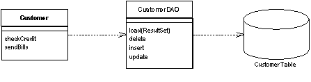
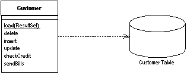
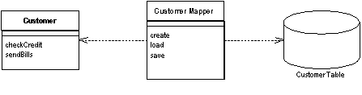
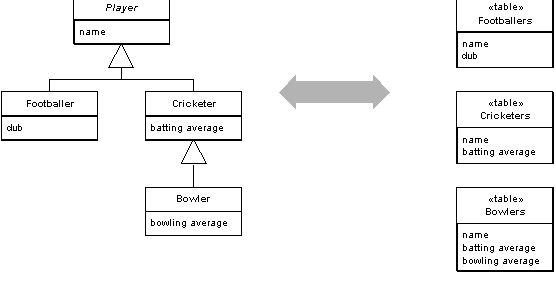

| Home | Articles | Talks | Links | Contact Me | ISA | ThoughtWorks |
From the earliest days of using objects with business software, I've wrestled with the issues of how to make objects interact with a relational database. The problem stems from the fact they lead to quite different data structures. Relational databases are table oriented: visualizing data as a a collection of one-dimensional tables which can be manipulate through relational calculus. Objects include collection data structures such as lists and maps, use inheritance and direct links between objects. On top of this we have the fact that objects are created and modified in memory and we have to coordinate what happens in memory with what is happening on disk. Since the database is usually a separate process, we have to do this with as few remote calls as possible.
The first question to ask in relational mapping is whether you can avoid it at all. During the early days of objects many people realized that there was a fundamental "impedance mismatch" between objects and relations. So there followed a spate of effort on object-oriented databases, which essentially brought the OO paradigm to disk storage. With an OO database you don't have to worry about mapping. You work with a large structure of interconnected objects, and the database figures out when to move objects on or off disks. You can use transactions to group together updates and permit sharing of the data store. To programmers it seems like an infinite amount of transactional memory that's transparently backed by disk storage.
The chief advantage of using OO databases is that it improves productivity. Although I'm not aware of any controlled tests, anecdotal sayings put the effort of mapping to a relational database as around a third of programming effort - a cost that you have to continue to pay during maintenance.
However most projects don't use OO databases. The primary reason against OO databases is risk. Relational databases are a well understood and proven technology backed by big vendors who have been around a long time. SQL provides a relatively standard interface for all sorts of tools. (If you're concerned about performance all I can say is that I haven't seen any conclusive data comparing performance of OO and relational systems.)
So if you're still here I'll assume you're needing to work with a relational database. Indeed even if you are able to use an OO database as your primary persistence mechanism, you'll probably still need to talk to existing relational databases.
Any project that works with a relational database needs to decide whether to purchase a tool for the purpose. These tools tend to be expensive, but have a lot of valuable features. Books like this can't keep up with technology fast enough to provide any guidance on specific tools, but reading this chapter and its associated patterns will give you an appreciation of the many issues in object-relational mapping. If you decide to roll your own solution, they will give you a head start. If you decide to purchase a tool, they will help you decide how to use the various features the tool gives you, as well as some appreciation for what goes on under the hood.
The tools I'm familiar with are designed to work with a Domain Model which is the most complex case. I've seen several projects build their own layer to do this, and most people have badly underestimated the amount and difficulty of the work required to do it. So if you are using a Domain Model I definitely advise you to look seriously at a tool. Although they may look expensive, you have to factor that against the considerable labor cost of doing it yourself, and maintaining it later on.
In this book I divide the basic choice into four:Active Record, Row Data Gateway, Table Data Gateway, and Data Mapper.
The starting point for the four are Row Data Gateway and Table Data Gateway which are both based on Gateway. In both cases you have an in-memory class which maps exactly to a table in the database. For each table you have a class with one field per column in the database. The gateways and the tables are thus isomorphic, they have the same form. The other characteristic about gateways is that they contains all the database mapping code for an application, that is all the SQL, which keeps the SQL out of any other code. The final, and equally important point is that it contains no domain logic. The gateway is purely there for database access, nothing else.
Figure 1: A data access object acts as a Gateway for the database tables
The choice between Row Data Gateway and Table Data Gateway depends upon your domain logic and also on how strongly record sets fit into the architecture of your application. Microsoft architectures, for instance, use record sets widely. Much of the UI machinery is based on manipulating record sets. In this environment, where record sets are widely used and easy to program with, a Table Data Gateway makes a lot of sense. It is the natural choice to work with a Table Module.
A Row Data Gateway is a good choice when the result sets are more difficult to work with, because you get a real object for each record in the data source. I often use Row Data Gateway with Transaction Script designs where I find the record set constructs to be less easy to manipulate than I would like.
Even for simple applications I tend to one of the gateway patterns - as a glance at my ruby and python scripts would confirm for you. I find the clear separation of SQL and procedural logic to be very helpful.
If your application has a Domain Model and that domain model looks very much like the database model, then you can consider Active Record. Essentially Active Record combines the gateway and the domain object into a single class that includes both database access and business logic. That's why it's a common pattern, and also why I don't like using it. Instead I prefer to keep those responsibilities separate. If you're business logic is pretty simple and a Domain Model that's isomorphic with the database schema makes sense, then you might consider it. But I almost always prefer a separate gateway class.
Figure 2: In the Active Recorda customer domain object knows how to interact with database tables.
The biggest exception to this is when you're refactoring a Transaction Script and Row Data Gateway design to move duplicate domain logic out of the Transaction Script. It makes sense to put that logic into the Row Data Gateway thus turning them into Active Records. If the domain logic isn't too complicated then this can be a reasonable move, better than having duplicate logic in the Transaction Scripts, but as the domain logic gets more complicated it's best to look at altering the domain logic design to a proper Domain Model or a Table Module.
Our third choice is the Data Mapper. This is the most complex, but also most flexible choice. The big difference between it and two data gateways is the inversion of dependency and control. With a data gateway the domain logic has to know about the structure of the data in the database, even if it doesn't have to deal with SQL. In Data Mapper the domain objects can be completely ignorant of the database layout and when and how data gets moved from the database to the domain model. This makes it easier to write and test the domain objects. It also makes it easier to change either the Domain Model or the database schema without forcing a change on the other.
Figure 3: A Data Mapper insulates the domain objects and the database from each other.
The driving choice is how you organize your domain logic. If you use Table Module then Table Data Gateway is the axe of choice. If you have a domain model that is reasonably complex then I'd pick Data Mapper. Active Record is a contender if the domain logic is very simple and you have control over the schema, but even then I'd tend to use Table Data Gateway. With a Transaction Script I would use Table Data Gateway if the platform makes it convenient to use record sets and Row Data Gateway otherwise.
These patterns aren't entirely mutually exclusive. In much of this discussion we are thinking of the primary persistence mechanism. By this we mean that if you have some kind of in memory model, your primary persistence mechanism is how you save the data in that model to the database. For that you'll pick one of these patterns, you don't want to mix them as that ends up getting very messy. However even if you're using Data Mapper as your primary persistence mechanism you may use a data Gateway to wrap tables or services that are being treated as external interfaces.
A further separation of SQL that I've seen a few times is to embed the SQL code into separate files as strings, and getting the database interaction classes to pull in the strings when they are needed. This allows people who only know SQL to write SQL without knowing the host language, it also allows them to format the SQL across multiple lines, which is difficult in many languages. The SQL can easily be put into a simple XML based file which can define the various SQL statements with named tags. If you're considering doing this you should remember that the host classes are still highly coupled to the separated SQL - a change in one is a change in the other. For this reason I don't tend to use this approach unless there's a very strong desire in the team to separate the physical languages, as I prefer to keep the highly coupled items in the same file. But it's not something I find a big problem either, so go ahead and do this if it works for you.
If your database mapping logic isn't too complex, it's relatively straightforward to roll your own. However as the mapping gets more complicated you should start to consider using commercial OR mapping tools. Such tools will do a lot of the hard work for you, at the cost of infiltrating their proprietary nature into your application. Don't under-estimate the complexity of building a powerful OR mapping layer, I've come across plenty of projects sunk by the size and complexity of the task.
I've also built a few of these layers myself. In these cases the most important thing is to not to try to write a general object-relational mapping mechanism. Write an OR mapping that works only for your application. This will lead you to many simplifications that make the task much easier, and with OR mapping you need all the simplification you can get.
When people talk about OR mapping, usually they focus on the structural aspects - how exactly you relate tables to objects. However I've found the hardest part of the exercise is architectural and behavioral aspects. I've already talked about the main architectural approaches - the next thing to think about is the behavioral problem.
The behavioral problem is how to get the various objects to load and save themselves to the database. At first sight this doesn't seem much of a problem. A customer object can have load and save methods that do this task. Indeed with Active Record this is an obvious route to take.
However as you start to deal with more complicated situations various problems rear their ugly head. If you're using Data Mapper the domain objects cannot make calls to the mapping layer since they have no visibility to it. This isn't a tricky problem to solve.
If you load in a bunch of objects to memory and modify them, you have to keep track of which one's you've modified and make sure to write them all back out to the database. If you only load a couple of records this is easy. As you load more and more objects it gets to be more of an exercise. This is particularly the case when you create some rows and modify others, since you'll need the keys from the created rows before you can modify the rows that refer to them. This is a slightly tricky problem to solve.
As you read objects and modify them, you have to ensure that the database state that you are working with stays consistent. If you read some objects, it's important to ensure the reading is isolated so that no other process changes any of the objects you've read while you are working on them. Otherwise you could have inconsistent and invalid data in your objects. This is the whole issue of concurrency, which is the topic of the next chapter.
A pattern that's an essential part to solving both of these problems is Unit of Work. A Unit of Work keeps track of all objects read from the database, together with all of the objects are modified in any way. It also handles how the updates occur to the database. Instead of the application programmer invoking explicit save methods, the programmer tells the unit of work to commit. The unit of work then sequences all the appropriate behavior to the database. This puts all of the complex commit processing in one place. The Unit of Work is an essential pattern whenever the behavioral interactions with the database become awkward.
A good way of thinking about Unit of Work is to think of it as an object that acts as the controller of the database mapping. Without a Unit of Work, typically the domain layer acts as the controller: deciding when to read and write to the database. The Unit of Work results from factoring the database mapping controller behavior out into its own object.
Reading data from a database involves issuing SQL queries. SQL is not a difficult language to use for many of the simpler actions that people often do. However putting SQL queries around an application can lead to problems. SQL is decidedly non-standard in practice, so scattering SQL around an application makes it difficult to find So it's useful to wrap SQL queries into the appropriate OR-mapping classes. Not just does this keep the SQL together, it also provides a better interface to queries and makes it easier to isolate SQL for testing.
When reading in data, I like to think of the methods as find methods. These find methods wrap SQL select statements with a method structured interface. So you might have methods such as find(id) or findForCustomer(customer). Clearly these finder methods can get pretty unwieldy if you have twenty three different clauses in your select statements, but these are thankfully rare.
Where you put the finder methods depends on the interfacing pattern that's used. If your database interaction classes are table-based, that is you have one instance of the class per table in the database, then you can combine the finder methods in with the inserts and updates. If your interaction classes are row based, that is you have one interaction class per row in the database then this doesn't work. In this case you can make the find operations static, but this will stop you from making the database operations substitutable - which means you can't swap out the database for testing. In this case it makes sense to have separate finder objects.
Whichever approach you use, you need to ensure that you don't load the same object twice. If you do that you'll have two in memory objects that correspond to a single database row. Update them both, and everything gets very confusing. So you use an Identity Map to keep track of what's been loaded to avoid loading things twice. If you're using Unit of Work, it's an obvious place to hold the Identity Map. Without the Unit of Work you can keep the Identity Map in the finder implementation.
When reading in data, performance issues can often loom large. This leads to a few rules of thumb.
Always try to pull back multiple rows at once. In particular never do repeated queries on the same table to get multiple rows. It's almost always better to pull back too much data than too little. (Although you have to be wary of locking too many rows if you're using locking.) So consider a situation where you need to get fifty people that you can identify by primary key in your domain model, but you can only construct a query such that you get two hundred people which from which you'll do some further logic to isolate the fifty you need. It's usually better to use one query that brings back unnecessary rows than to issue fifty individual queries.
Another way to avoid going to the database more than once is to use joins so that you can pull multiple tables back with a single query. The resulting record set looks odd, but can really speed things up.
However if you're using joins, bear in mind that databases are optimized to handle up to three or four joins per query. Beyond that performance suffers, although you can restore a good bit of this with cached views.
But in all cases you should profile your application with your specific database and data. General rules can guide thinking, but your particular circumstances will always have their own variations. Database systems and application servers often have sophisticated caching schemes, and there's no way I can predict what will happen for your application. So set aside time to do performance profiling and tuning.
Structural mapping patterns are the ones most written about, and most understood. They describe how the data in a relational database maps to data in objects.
The central issue here is the different way in which objects and relations handle links. This leads to two problems. Firstly there is a difference in representation. Objects handle links by storing references, either references held be the runtime of memory managed environments or memory addresses. Relations handle links by forming a key into another table. The second problem is that objects can easily use collections to handle multiple references from a single field, while normalization forces all relation links to be single valued. This leads to reversals of the data structure between objects and tables. An order object would naturally have a collection of line item objects which do not need any reference back to the order. However the table structure is the other way around, the line item must include a foreign key reference to the order, since the order cannot have a multi-valued field.
The way to handle the representation problem is to keep the relational identity of each object as an Identity Field in the object, and looking up these values to map back and forth between the object references and the relational keys. It's a tedious process, but not that difficult once you understand the basic technique. When you read objects from the disk you use an Identity Map as a look-up table from relational keys to objects. Each time you come across a foreign key in the table, you use the look up table to wire up the appropriate inter-object reference. If you don't have the key in the Identity Map you need to either go to the database to get it, or use a Lazy Load. When saving an object, each time you save the object you save it into the row with the right key. Any inter-object reference is replaced with the target object's id field.
On this foundation the collection handling requires a little more jiggery-pokery. If an object has a collection you need to issue another query to find all the rows that link to the id of the source object (or again you can avoid the query now with Lazy Load). Each object that comes back gets created and added to the collection. Saving the collection involves saving each object in the collection and making sure it has a foreign key to the source object. Messy, but simple when you get the hang of it - which is why some form of metadata based approach becomes an obvious move for larger systems (I'll elaborate on that later).
When you're working with collections a common gotcha is to rely on the ordering within the collection. In OO languages it's common to use ordered collections such as lists and arrays - indeed it often makes it easier to test. But it's very difficult to maintain an arbitrarily ordered collection when saved to a relational database. For this reason it's worth considering using unordered sets for storing collections. Another option is to ensure that whenever you do a collection query decide on a sort order
In some cases referential integrity can make updates more complex. Modern systems allow you to defer referential integrity checking to the end of the transaction. If you have this capability there's no reason not to use it. Otherwise the database will check on every write. In this case you have to be careful to do your updates in the right order. How to do this is out of the scope of this book but one technique is to do a topological sort of your updates. Another is to hard code which tables get written in which order. This technique can sometimes reduce deadlock problems.
Identity Field is used for inter-object references that turn into foreign keys, but not all object relationships need to be persisted that way. Small Value Objects, such as date ranges and money objects clearly should not be represented as their own table in the database. So instead you take all the fields of the Value Object and embed them into the linked object as a Embedded Value. Since Value Objects have value semantics you can happily create them each time you get a read and you don't need to bother with an Identity Map. Writing them out is also easy, just deference the object and spit out its fields into the owning table
You can do this kind of thing on a larger scale by taking a whole cluster of objects and saving them as a single column in a table as a Serialized LOB. LOB stands for large object which can either be a binary object, (BLOB) or it can be textual. Serializing a clump of objects as an XML document is an obvious route to take for a hierarchic object structure. This way you can grab a whole bunch of small linked objects in a single read. Often databases perform poorly with small highly interconnected objects, where you spend a lot of time making many small database calls. Hierarchic structures such as org charts and bills of materials are common cases where a Serialized LOB can save a lot of database round trips.
The downside is that SQL isn't aware of what's happening, so you can't make portable queries against the data structure. Again XML may come to the rescue here, allowing you to embed XPath query expressions into SQL calls, although the embedding is largely non-standard at the moment. As a result currently Serialized LOB is best used when you don't want to query for the parts of the stored structure.
In the above hierarchies I'm talking about compositional hierarchies, such as a parts tree, which relational system traditionally do a poor job at. There's another kind of hierarchy that causes relational headaches, that of class hierarchies linked by inheritance. Since there's no standard way to do inheritance in SQL, again we've got a mapping to perform. For any inheritance structure there's basically three options. You can have a one table for all the classes in the hierarchy (Single Table Inheritance, one table for each concrete class (Concrete Table Inheritance) or one table per class in the hierarchy (Class Table Inheritance).

Figure 4: Single Table Inheritance: using one table to store all the classes in a hierarchy
Figure 5: Concrete Table Inheritance: using one table to store each concrete class in a hierarchy

Figure 6: Class Table Inheritance: using a table for each class in a hierarchy
The trade-offs are all between duplication of data structure and speed of access. Class Table Inheritance is the simplest relationship between the classes and the tables, but needs multiple joins to load a single object, which usually reduces performance. Concrete Table Inheritance avoids the joins, allowing you pull a single object from one table. But Concrete Table Inheritance is brittle to changes. Any change to a superclass and you have to remember to alter all the tables (and the mapping code). Altering the hierarchy itself can cause even bigger changes. Also the lack of a superclass table can make key management awkward and seriously get in the way of referential integrity. In some databases Single Table Inheritance's biggest downside is wasted space, since each row has to have columns for all possible subtypes, which leads to empty columns. But many databases do a very good job of compressing out wasted space in tables. Other problems with Single Table Inheritance include it's size making it a bottleneck for accesses, but it has the great advantage that it does put all the stuff in one place which makes modification easier and avoids joins.
The three options aren't mutually exclusive. In one hierarchy you can mix patterns: for instance you could have several classes pulled together with Single Table Inheritance and use Class Table Inheritance for a few unusual cases. Of course mixing patterns adds complexity.
There's no clear cut winner here, you need to take into account your own circumstances and preferences, much like all the rest of these patterns. My first choice tends to be Single Table Inheritance as its easy to do and is resilient to many refactorings. I then tend to use the other two as needed to help solve the inevitable issues with irrelevant and wasted columns. Often the best thing to do is to talk to the DBAs, they'll often have good advice as to the sort of access that most makes sense for the database.
All the examples above, and in the patterns, use single inheritance. Although multiple inheritance is becoming less fashionable these days and most languages are increasingly avoiding it, the issue still appears in OR mapping when you use interfaces, as in Java and .NET. The patterns here don't go into this topic specifically but essentially you cope with multiple inheritance using variations of the above trio of patterns. Single Table Inheritance puts all superclasses and interfaces into the one big table, Class Table Inheritance makes a separate table for each interface and superclass, and Concrete Table Inheritance includes all interfaces and superclasses in each concrete table.
The last structural pattern to mention is Lazy Load. If you have all your objects connected together then any read of any object could pull an enormous object graph out of the database. To avoid such inefficiencies you need to reduce what you bring back, yet still keep the door open to pull back more data if you need it later on. Lazy Load relies on having a place holder for a reference to an object. There are several variations on the theme, but all of them have the object reference modified so that instead of pointing to the real object it marks a placeholder. Only if you try to follow the link does the real object get pulled in from the database. By using Lazy Load at suitable points you can bring back just enough from the database with each call.
Occasionally I run into situations where the same kind of data needs to be pulled from multiple sources. There may be more than one database that holds the same data, but has small differences in the schema due to some copy and paste reuse. (In this situation the amount of annoyance is inversely proportional to the amount of the difference.) Another possibility is using different mechanisms, sometimes storing the data in a database and sometimes through messages. You may want to pull similar data from both XML messages, CICS transactions and relational tables.
The simplest option is to have multiple mapping layers, one for each data source. However if data is very similar this can lead to a lot of duplication. In this situation you might consider a two layer mapping scheme. The first step converts data from the in-memory form to logical data store form. The logical data store form is designed to maximize the similarities in the data source formats. The second step then maps from the logical data store schema to the actual physical data store schema. The second step contains the differences.
The extra step only pays itself when you have many commonalities, so you should use this when you have similar but annoyingly different physical data stores. When doing this treat the mapping from the logical data store to the physical data store as a Gateway and use any of the mapping techniques to map from the application logic to the logical data store.
When you map to a relational database there are essentially three situations that you encounter
The simplest case is where you are doing the schema yourself and you have little to moderate complexity in your domain logic, resulting in a Transaction Script or Table Module design. In this case you can design the tables around the data using classic database design techniques. Use a Row Data Gateway or Table Data Gateway to pull the SQL away from the domain logic.
If you are using a Domain Model then you should beware of a design that looks like a database design. In this case build your Domain Model without regard to the database so that you can best simplify the domain logic. Treat the database design as a way of persisting the objects' data. Data Mapper gives you the most flexibility here, but it is more complex. If a database design that is isomorphic to the Domain Model makes sense, you might consider a Active Record instead.
Although the build the model first is reasonable way of thinking about it, the advice only applies within short iterative cycles. Spending six months building a database free Domain Model and then deciding to persist it once you're done is highly risky. The danger is that the resulting design will have crippled performance problems that take too much refactoring to fix. Instead build the database up with each iteration, of no more than six weeks in length - preferably less. That way you'll get rapid and continuous feedback about how your database interactions work in practice. Within any particular task you should think about the Domain Model first, but integrate each piece of Domain Model in with the database as you go.
When the schema's already there, then your choices are similar, but the process is slightly different. With simple domain logic you build Row Data Gateway or Table Data Gateway classes that mimic the database, and layer domain logic on top of that. With more complex domain logic you'll need a Domain Model which is highly unlikely to match the database design. So gradually build up the Domain Model and include Data Mappers to persist the data to the existing database.
In this book most of my examples use hand written code. With mapping that's often simple and repetitive this can lead to code that's simple and repetitive - and repetitive code is a sign of something wrong with the design. There is much you can do by factoring out common behaviors with inheritance and delegation - good honest OO practices. But there's also call for a more sophisticated approach using Metadata Mapping
Metadata Mapping is based on boiling down the details of the mapping into a metadata file. This metadata file contains the details of the mapping: how columns in the database map to fields in objects. The point of this is that once you have the metadata you can then avoid the repetitive code by using either code generation or reflective programming.
Using metadata buys you a lot of expressiveness from a little metadata. One line of metadata can say something like
<field name = customer targetClass = "Customer", dbColumn = "custID", targetTable = "customers" lowerBound = "1" upperBound = "1" setter = "loadCustomer"/>
From that you can define the read code, the write code, automatic generation of ad hoc joins, all of the SQL, enforcement of the multiplicity of the relationship, and even fancy things like computing write orders under the presence of referential integrity. This is why commercial OR mapping tools tend to use metadata.
Despite the many advantages of metadata, in this book I've focused on hand-written examples. This is because I think that's easier to understand first. Once you get the hang of the patterns and can hand write them for your application, you'll be able to figure out how to use metadata to make matters easier.
Most database interfaces rely on some kind of database connection object to act as the link between application code and the database. Typically a connection must be opened before you can execute commands against the database, indeed usually you need an explicit connection to create and execute a command. This same connection must be open the whole time you execute the command. Queries return a Record Set. Some interfaces provide for disconnected Record Sets, these can be manipulated after the connection is closed. Other interfaces only provide connected Record Sets, which implies that the connection must remain open while the Record Set is manipulated. If you are running inside a transaction, then usually transactions are bound to a particular connection and the connection must remain open during the whole transaction.
In many environments it's expensive to create a connection. In these cases it's worth creating a pool of connections. In this situation developers request a connection from the pool and release the connection when they are done, instead of the creating and closing. Most platforms these days give you pooling, so you'll rarely have to do it yourself. If you do have to do it yourself, check first to see if pooling actually does help performance. Increasingly environments make it quicker to create a new connection so there's no need to pool.
Environments that do give you pooling often put it behind an interface that looks like creating a new connection. That way you don't know whether you are getting a brand new connection, or one allocated from a pool. That's a good thing, as the choice about whether to pool or not is properly encapsulated. Similarly closing the connection may not actually close, but just return it to the pool for someone else to use. In this discussion I'll use open and close, but you can substitute these for getting from a pool and releasing back to the pool.
Expensive or not to create, connections need management. Since they are expensive resources to manage, connections must be closed as soon as you are done using them. Furthermore if you are using a transaction, usually you need to ensure that every command inside a particular transaction goes with the same connection.
The most common advice is to get a connection explicitly, using a call to a pool or connection manager, and then supply the connection to each database command you wish to make. Once you are done with the connection, you should close it. This advice leads to a couple of issues: making sure you have the connection everywhere you need it, and ensuring you don't forget to close it at the end.
To ensure you have it where you need it there are two choices. One is to pass the connection around as an explicit parameter. The problem with this is that the connection gets added to all sorts of method calls where its purpose is only to be passed to some other method five layers down the call stack. This, of course, is the situation to bring out Registry. Since you don't want multiple threads using the same connection, you'll want a thread-scoped Registry.
If you're half as forgetful as I am, explicit closing isn't such a good idea. It's just too easy to forget to do it when you should. You also can't close the connection with every command, because you may be running inside a transaction and just closing the connection will usually cause the transaction to rollback.
Memory is also a resource that needs to be freed up when you're not using it. Modern environments these days provide automatic memory management and garbage collection. So one way to ensure connections get closed is to use the garbage collector. In this approach either the connection itself, or some object that refers to the connection, closes the connection during garbage collection. The good thing about this is that it uses the same management scheme that's used for memory, and so it's both convenient and familiar. The problem with this is that the close of the connection only happens when the garbage collector actually reclaims the memory, and this can be quite a bit later than when the connection lost its last reference. As a result unreferenced connections may sit around a while before they get closed. Whether this is a problem or not depends very much on your specific environment.
On the whole I don't like relying on garbage collection, other schemes - even explicit closing - are better. But garbage collection does make a good backup in case the regular scheme fails. After all it's better to have the connections close eventually than to have them hanging around forever.
Since connections are so tied to transactions a good way to manage the connections is to tie them to a transaction. Open a connection when you begin a transaction, and close it when you commit or rollback. Have the transaction know what connection its using, and that way you can ignore the connection completely and just deal with the transaction. Since the transaction's completion has a visible effect, it's easier to remember to commit it and to spot if you forget. If you use a Unit of Work it makes a natural fit to manage both transaction and connection.
If you do things outside of a transaction, such as reading immutable data, then you use a fresh connection for each command. Pooling can deal with any issues in creating short-lived connections.
If you're using a disconnected Record Set you can open a connection to put the data in the record set and close it while you manipulate the data in the Record Set. Then when you're done with the data you can open a new connection, and transaction, to write the data out. If you do this you'll need to worry about the data being changed while the Record Set was being manipulated, a topic I'll talk about with concurrency control
The specifics of connection management are very much a feature of your database interaction software, so the strategy you use is often dictated to you by your environment.
You'll notice that some of the code examples use select statement in the form select * from while others use named columns. Using select * can have some serious problems in some database drivers which would break if a new column was added or a column was reordered. Although more modern environments don't suffer from this, it's not wise to use select * if you are using positional indices to get information from columns, as a column reorder will break code. It's okay to use column name indices with a select * and indeed column name indices are clearer to read, however column name indices may be slower - although that probably won't make much difference given the time for the SQL call, as usual measure to be sure. If you do use column number indices, you need to make sure the accesses to the result set are very close to the definition of the SQL statement so they don't get out of sync if the columns get reordered, consequently if using Table Data Gateway you should use column name indices as the result set is used by every piece of code that runs a find operation on the gateway.
For connections, I just conjure them up with a call to a "DB" object which is a Registry. How you get a connection will depend on your environment so you'll substitute this with whatever you need to do. I haven't involved transactions in any of the patterns other than those on concurrency - again you'll need to mix in whatever your environment needs.
Object-relational mapping is a fact of life for most people, so it's no surprise that there's been a lot written on the subject. The surprise is that there isn't a even a single coherent, complete, and up to date source in a book, which is why I've devoted so much of this one to this tricky yet interesting subject.
The nice thing about database mapping is that there's a lot of ideas out there to steal from. The most victimized intellectual banks are: [Brown and Whitenack], [Ambler],[Yoder], and [Coldeway and Keller]. I'd certainly urge you to have a good surf through this material to supplement the patterns in this book.
 |  |